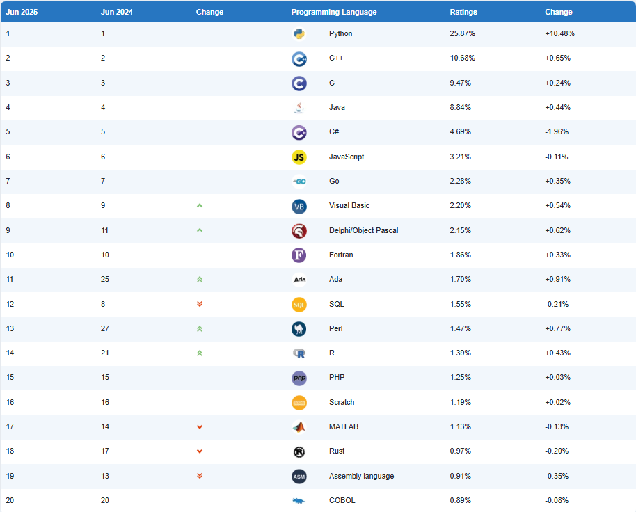
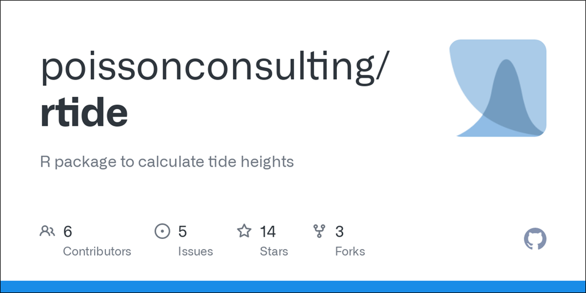
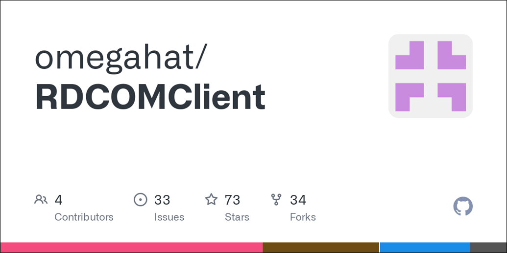

R for Beginners
Pinellas County Division of Environmental Management
July 10, 2025
DISCLAIMER
I am not a computer scientist, I’m just a guy that likes data
Outline
- Introductions
- R vs. RStudio
- Use Cases
- RStudio Interface
- R basics
- Coding practice
Background
What is R?
Wikipedia says:
“R is a programming language for statistical computing and data visualization.”

- Data wrangling/tidying
- Statistical analysis
- Data visualization
- Automation

Why use R?
R is one of the most popular programming languages in environmental science.
Open-source (free!) with a community of users and developers around the world and throughout numerous sectors.
Provides powerful tools for data analysis, visualization, and reporting.



What is RStudio?
RStudio is the IDE (Integrated Development Environment) for R.
Used for writing, running, and debugging R code.
Increases productivity and efficiency.

R vs. RStudio
R is the programming language
RStudio is the user interface for R (IDE)
R is the engine
RStudio is the informational display
CRAN
- CRAN (Comprehensive R Archive Network) is the official repository for the R language and R packages
- CRAN is a network of servers that store R packages and documentation
- Maintained by POSIT
- When you install a package, it is downloaded from CRAN
- As of 05/12/2025, there are 22,384 packages on CRAN!

R and R Package Security
- R and RStudio are safe and maintained by POSIT.
- POSIT runs unit tests on CRAN packages before they are released for security.
- Be careful about downloading packages from GitHub or other sources unless you review all of the code or is coming from a verified and trusted source.
- Sources like Stack Overflow and other coding websites are great for snippets
Use Cases
Use Case - Water Quality Monitoring
Sampling divided into:
- Streams
- Lakes/Coastal
- Nutrients, chlorophyll, Turbidity, bacteria, Dissolved Oxygen, etc.
- Sampling divided into “runs” with tidally influenced streams
Stream Sampling Dates
- No previous automation
- Tide charts inspected for each site for optimal sampling dates
rtidepackage used to automatically pull tidal height
- Algorithm developed to select optimal sampling dates based on time of outgoing tide

Randomized Strata Sampling – Old
SAS code 20+ years old and divided into multiple files
Only 1 license available within our group
Limited staff knowledge of SAS
Randomized Strata Sampling – New
Old SAS code converted to R
Code available to all staff to view, edit, run
In-house expertise allows for customization
Combined with stream date code to generate yearly sampling schedule for streamlined process
Sample Bottle Kits

Data QA/QC Semi-Automation
Data QA/QC Semi-Automation
- Previous automation processes were limited to HACH systems, all other QA/QC checks were done manually (Time/date, missing data)
Current process performs all checks automatically and generates PDF report detailing each check conducted
- Reproducible QA/QC
- Provides digital paper trail
- Processing time before automation:
5-8 weeks
- Processing time after automation:
2-4 weeks
Dashboards
https://pcdem.shinyapps.io/dashboard/
Presentations
This entire presentation was created using R and RStudio!
The code used to create this presentation is available on GitHub
The presentation is in
Quartoformat, which allows for easy conversion to HTML, PDF, and Word formats
AI and Coding
AI is a powerful tool for generating code, but it is not perfect
You can use it to help learn code but you should try to figure it out yourself first
- Don’t vibe-code!
- You can get code that works and generates results but are wrong
- You need to understand the code and know how to problem-solve

Installing R & RStudio
Installing R
R can be downloaded for free from posit (maintainer of R/RStudio software)
Click “Download and Install R” which will take you to the R CRAN page
Click “Download R for (your OS)”
- Windows: Click “base” and then “Download R x.x.x for Windows”
- macOS: Select the correct
.pkgfile based on your chip specs
Follow the installation instructions
Installing RStudio
RStudio is downloaded on the same posit page where R was downloaded from
Click “Download RStudio Desktop For (your OS)”
Open the RStudio
.exefile and follow the instructionsYou can open RStudio by clicking the icon or searching your applications
Changing R Version
RStudio allows you to change the version of R you are using
R Coding Basics
Common Terms
R-specific
- Object: A variable, data frame, or other data structure
- Script: A file containing R code
- Function: A block of code that performs a specific task (
function()) - Argument: A value passed to a function
- Package: A collection of functions and data sets
RStudio-specific
- Panel: A section of the RStudio interface
- Project: A collection of files and settings for a specific task
- Environment: A list of objects currently in memory
Navigating RStudio
Code can be
written here
Imported data and
variables are here
Files, plots, and
packages are here
Output from code
displayed here
Running Code
You can run a line of code by placing the cursor before the line or anywhere in the line and pressing ‘Ctrl + Enter’ (Windows) or ‘Cmd + Enter’ (Mac).
Notice the ‘500’ printed to the console.
You can also highlight a block of code and run it all at once.
Setting Your Working Directory
- Your working directory is where all your files live
- R does not know where your files are unless you tell it
- If you want to use any data that does not come with a package, you need to tell R where it lives
Installing Packages
Packages can be installed through 2 methods: console/script or RStudio interface
Console/Script:
install.packages("package_name")- If you want to install multiple packages at once you can do
install.packages(c("package1", "package2"))
- If you want to install multiple packages at once you can do
RStudio: Click the “Packages” tab in the bottom-right window pane.Then click “Install” and search for the package you want to install.
Loading Packages
Once the packages are installed we need to load them into our R session with the library() function
- Notice too that you don’t need quotes around the package names anymore.
Rnow recognizes these packages as defined objects with given names
Basic Math
R is equipped with lost of mathemtaical operations
Logical Statements & Booleans
| Test | Meaning |
|---|---|
x < y |
Less than |
x > y |
Greater than |
== |
Equal to |
x <= y |
Less than or equal to |
x >= y |
Greater than or equal to |
x != y |
Not equal to |
x | y |
Or |
x & y |
And |
x %in% y |
Is in |
is.na(x) |
Is missing |
!is.na(x) |
Is not missing |
Logical Statements & Booleans (cont.)
Logicals and Boolean Precedence
Rlike most other programming languages will evaluate the logical operates (==,>, etc) before the booleans (&,|, etc).
- In this case,
Ris evaluating two separate logical statements:
- 1 > 0.5, which is TRUE
- 2, which is TRUE because R evaluates it as as.logical(2) which is always TRUE
Cool, Now What?
- Many different tasks can be done by combining the basic math and logical statements.
- But we may need to set up a group of tests to do something.
- We need to Assign them to reuse them later in functions, loops, etc.
Assignment
- The most popular assignment operator in
Ris<-which is just<followed by-- Read aloud as “gets”
x <- "Hello, World!" # note that text need to be wrapped in quotes
x # here you would "call" the variable to return the assigned value[1] "Hello, World!"xis the variable and"Hello, World!"is the value assigned to it
Using
=as an assignment operator also works but is not recommended since it is also used to define arguments within functionsMostly a matter of preference but will be easier for other programmers to read
Just keep it consistent
Naming Variables
- Variable names can be anything you want but there are some rules to help make your code more readable:
- Use descriptive names for objects and functions
- Use camelCase or snake_case for naming objects and functions
- Keep names short but descriptive
- Avoid using special characters (e.g. $, %, &, etc.) in variable names
- Don’t start variable names with a number
- Some of these rules must be followed to avoid errors, others are just good practice
Naming Variables (cont.)
Good Names
Bad Names
Note the errors in the naming below
Error in parse(text = input): <text>:1:2: unexpected symbol
1: 1stAvgTemp
^Naming Variables (cont.)
There are some names we can never use because they are reserved for R functions
There are more that can’t be used but you’ll see an error if you try to use them
Functions
- Functions are blocks of code that perform a specific task
- Functions can take arguments (inputs) and return values (outputs)
- Functions can be built-in or user-defined
- The argument does not have to be named for all functions, but may be necessary the more arguments a function has.
Working with objects
Global Environment
- The global environment is where all your objects live and can give us a hint about what went wrong

Fixing Our Issue
- To get the mean of
ywe need to “index”eusing the$operator
- R will look for named objects in the environment
- If the interpreter can’t find
yor any other object, it will give up because it does not think it exists - You need to tell the interpreter what to look for inside of the object
What are Objects?
- Objects are what we work with in
R
[1] "is" "is.array"
[3] "is.atomic" "is.call"
[5] "is.character" "is.complex"
[7] "is.data.frame" "is.double"
[9] "is.element" "is.empty.model"
[11] "is.environment" "is.expression"
[13] "is.factor" "is.finite"
[15] "is.finite.POSIXlt" "is.function"
[17] "is.hashtab" "is.infinite"
[19] "is.infinite.POSIXlt" "is.integer"
[21] "is.language" "is.leaf"
[23] "is.list" "is.loaded"
[25] "is.logical" "is.matrix"
[27] "is.mts" "is.na"
[29] "is.na.data.frame" "is.na.numeric_version"
[31] "is.na.POSIXlt" "is.na<-"
[33] "is.na<-.default" "is.na<-.factor"
[35] "is.na<-.numeric_version" "is.name"
[37] "is.nan" "is.nan.POSIXlt"
[39] "is.null" "is.numeric"
[41] "is.numeric.Date" "is.numeric.difftime"
[43] "is.numeric.POSIXt" "is.numeric_version"
[45] "is.object" "is.ordered"
[47] "is.package_version" "is.pairlist"
[49] "is.primitive" "is.qr"
[51] "is.R" "is.raster"
[53] "is.raw" "is.recursive"
[55] "is.relistable" "is.single"
[57] "is.stepfun" "is.symbol"
[59] "is.table" "is.ts"
[61] "is.tskernel" "is.unsorted"
[63] "is.vector" "isa"
[65] "isatty" "isBaseNamespace"
[67] "isClass" "isClassDef"
[69] "isClassUnion" "isdebugged"
[71] "isFALSE" "isGeneric"
[73] "isGrammarSymbol" "isGroup"
[75] "isIncomplete" "islands"
[77] "isNamespace" "isNamespaceLoaded"
[79] "ISOdate" "ISOdatetime"
[81] "isOpen" "isoreg"
[83] "isRematched" "isRestart"
[85] "isS3method" "isS3stdGeneric"
[87] "isS4" "isSealedClass"
[89] "isSealedMethod" "isSeekable"
[91] "isSymmetric" "isSymmetric.matrix"
[93] "isTRUE" "isVirtualClass"
[95] "isXS3Class" Vectors
- Come in two types:
- Atomic: Must be the same type
- Lists: can be different types
myList <- list(a = 1:4, b = "Hello, World!", c = data.frame(x = 1:5, y = 11:15))
is.vector(myList) # Check if my_list is a vector[1] TRUE
Atomic Vectors
- Can come in a variety of types:
- Numeric: can contain whole numbers and decimals
- Logicals: can only take two values TRUE or FALSE
- Characters: holds character string
- Factors: used to store categorical data
Accessing Vector Elements
You can access the elements of a vector by “indexing” the position of that element
We use the
[]operator to index vectorsThe first element of a vector is at position 1, not 0
You can use
:to index a range of elementsYou can use
c()to index multiple, non-consecutive elementsYou can also use negative indexing to exclude elements
Lists require
[[]]to access the vector, followed by[]to access the elements of that vector
Indexing Vectors
[1] 41.10167 36.34400 46.75605 19.25142 37.92034 17.27293 22.01764 36.71569
[9] 36.20581 20.58220[1] 36.34400 19.25142 17.27293 22.01764 36.71569 36.20581 20.58220Indexing Lists
$num
[1] 1 2 3 4 5
$name
[1] "Joe" "Bob" "Mary"You can also use the $ operator to access list elements by name
Your Turn
- Install and load the packages
tidyverse,psych, andpalmerpenguinsusing theinstall.packages()andlibrary()functions. - Make a vector of 100 random values using the
rnorm()function and name itvec(hint: use?rnormto read the argument descriptions). - Get summary statistics for the vector using the
describe()function. - Use
[]indexing to return the first 10 values of the vector. - Plot your data using the
plot()function.
10:00
Starting a New Project
Create New Project
- Follow these steps to create a new project:
- Go to
Filein the upper left corner of RStudio - Select
New Project - Select
New Directory - Select
New Project - Set the
Directory name:topenguins - Click
Browse...and set the directory to your desktop or other location - Click
Create Project
- Go to
Create New File
- Once the new project session has opened make a new file to write code in:
- Go to
Filein the upper left corner of RStudio - Select
New File - Select
R Script - Save the file as
penguins.R
- Go to
- You can also use keyboard shortcuts to make a new file (Ctrl + Shift + N) and save it (Ctrl + S)
Data we Will Use

Artwork by @allison_horst
Our Data
# A tibble: 6 × 8
species island bill_length_mm bill_depth_mm flipper_length_mm body_mass_g
<fct> <fct> <dbl> <dbl> <int> <int>
1 Adelie Torgersen 39.1 18.7 181 3750
2 Adelie Torgersen 39.5 17.4 186 3800
3 Adelie Torgersen 40.3 18 195 3250
4 Adelie Torgersen NA NA NA NA
5 Adelie Torgersen 36.7 19.3 193 3450
6 Adelie Torgersen 39.3 20.6 190 3650
# ℹ 2 more variables: sex <fct>, year <int>tibble [344 × 8] (S3: tbl_df/tbl/data.frame)
$ species : Factor w/ 3 levels "Adelie","Chinstrap",..: 1 1 1 1 1 1 1 1 1 1 ...
$ island : Factor w/ 3 levels "Biscoe","Dream",..: 3 3 3 3 3 3 3 3 3 3 ...
$ bill_length_mm : num [1:344] 39.1 39.5 40.3 NA 36.7 39.3 38.9 39.2 34.1 42 ...
$ bill_depth_mm : num [1:344] 18.7 17.4 18 NA 19.3 20.6 17.8 19.6 18.1 20.2 ...
$ flipper_length_mm: int [1:344] 181 186 195 NA 193 190 181 195 193 190 ...
$ body_mass_g : int [1:344] 3750 3800 3250 NA 3450 3650 3625 4675 3475 4250 ...
$ sex : Factor w/ 2 levels "female","male": 2 1 1 NA 1 2 1 2 NA NA ...
$ year : int [1:344] 2007 2007 2007 2007 2007 2007 2007 2007 2007 2007 ...Indexing Data Frames
- We can use column position to index objects.
- There are two slots we can use to extract data: rows and columns
object_name[row, column]- We can also subset out data by column position using
:orc(column_1, column_2)
Negative Indexing
- We can also exclude various elements using
-and/or logical tests
# A tibble: 344 × 7
island bill_length_mm bill_depth_mm flipper_length_mm body_mass_g sex year
<fct> <dbl> <dbl> <int> <int> <fct> <int>
1 Torge… 39.1 18.7 181 3750 male 2007
2 Torge… 39.5 17.4 186 3800 fema… 2007
3 Torge… 40.3 18 195 3250 fema… 2007
4 Torge… NA NA NA NA <NA> 2007
5 Torge… 36.7 19.3 193 3450 fema… 2007
6 Torge… 39.3 20.6 190 3650 male 2007
7 Torge… 38.9 17.8 181 3625 fema… 2007
8 Torge… 39.2 19.6 195 4675 male 2007
9 Torge… 34.1 18.1 193 3475 <NA> 2007
10 Torge… 42 20.2 190 4250 <NA> 2007
# ℹ 334 more rows$ Indexing
A more common way to index data is to use the $ operator to reference data by name rather than posision.
[1] Adelie Adelie Adelie Adelie Adelie Adelie Adelie
[8] Adelie Adelie Adelie Adelie Adelie Adelie Adelie
[15] Adelie Adelie Adelie Adelie Adelie Adelie Adelie
[22] Adelie Adelie Adelie Adelie Adelie Adelie Adelie
[29] Adelie Adelie Adelie Adelie Adelie Adelie Adelie
[36] Adelie Adelie Adelie Adelie Adelie Adelie Adelie
[43] Adelie Adelie Adelie Adelie Adelie Adelie Adelie
[50] Adelie Adelie Adelie Adelie Adelie Adelie Adelie
[57] Adelie Adelie Adelie Adelie Adelie Adelie Adelie
[64] Adelie Adelie Adelie Adelie Adelie Adelie Adelie
[71] Adelie Adelie Adelie Adelie Adelie Adelie Adelie
[78] Adelie Adelie Adelie Adelie Adelie Adelie Adelie
[85] Adelie Adelie Adelie Adelie Adelie Adelie Adelie
[92] Adelie Adelie Adelie Adelie Adelie Adelie Adelie
[99] Adelie Adelie Adelie Adelie Adelie Adelie Adelie
[106] Adelie Adelie Adelie Adelie Adelie Adelie Adelie
[113] Adelie Adelie Adelie Adelie Adelie Adelie Adelie
[120] Adelie Adelie Adelie Adelie Adelie Adelie Adelie
[127] Adelie Adelie Adelie Adelie Adelie Adelie Adelie
[134] Adelie Adelie Adelie Adelie Adelie Adelie Adelie
[141] Adelie Adelie Adelie Adelie Adelie Adelie Adelie
[148] Adelie Adelie Adelie Adelie Adelie Gentoo Gentoo
[155] Gentoo Gentoo Gentoo Gentoo Gentoo Gentoo Gentoo
[162] Gentoo Gentoo Gentoo Gentoo Gentoo Gentoo Gentoo
[169] Gentoo Gentoo Gentoo Gentoo Gentoo Gentoo Gentoo
[176] Gentoo Gentoo Gentoo Gentoo Gentoo Gentoo Gentoo
[183] Gentoo Gentoo Gentoo Gentoo Gentoo Gentoo Gentoo
[190] Gentoo Gentoo Gentoo Gentoo Gentoo Gentoo Gentoo
[197] Gentoo Gentoo Gentoo Gentoo Gentoo Gentoo Gentoo
[204] Gentoo Gentoo Gentoo Gentoo Gentoo Gentoo Gentoo
[211] Gentoo Gentoo Gentoo Gentoo Gentoo Gentoo Gentoo
[218] Gentoo Gentoo Gentoo Gentoo Gentoo Gentoo Gentoo
[225] Gentoo Gentoo Gentoo Gentoo Gentoo Gentoo Gentoo
[232] Gentoo Gentoo Gentoo Gentoo Gentoo Gentoo Gentoo
[239] Gentoo Gentoo Gentoo Gentoo Gentoo Gentoo Gentoo
[246] Gentoo Gentoo Gentoo Gentoo Gentoo Gentoo Gentoo
[253] Gentoo Gentoo Gentoo Gentoo Gentoo Gentoo Gentoo
[260] Gentoo Gentoo Gentoo Gentoo Gentoo Gentoo Gentoo
[267] Gentoo Gentoo Gentoo Gentoo Gentoo Gentoo Gentoo
[274] Gentoo Gentoo Gentoo Chinstrap Chinstrap Chinstrap Chinstrap
[281] Chinstrap Chinstrap Chinstrap Chinstrap Chinstrap Chinstrap Chinstrap
[288] Chinstrap Chinstrap Chinstrap Chinstrap Chinstrap Chinstrap Chinstrap
[295] Chinstrap Chinstrap Chinstrap Chinstrap Chinstrap Chinstrap Chinstrap
[302] Chinstrap Chinstrap Chinstrap Chinstrap Chinstrap Chinstrap Chinstrap
[309] Chinstrap Chinstrap Chinstrap Chinstrap Chinstrap Chinstrap Chinstrap
[316] Chinstrap Chinstrap Chinstrap Chinstrap Chinstrap Chinstrap Chinstrap
[323] Chinstrap Chinstrap Chinstrap Chinstrap Chinstrap Chinstrap Chinstrap
[330] Chinstrap Chinstrap Chinstrap Chinstrap Chinstrap Chinstrap Chinstrap
[337] Chinstrap Chinstrap Chinstrap Chinstrap Chinstrap Chinstrap Chinstrap
[344] Chinstrap
Levels: Adelie Chinstrap GentooIndexing by Tests
# A tibble: 176 × 2
species sex
<fct> <fct>
1 Adelie female
2 Adelie female
3 <NA> <NA>
4 Adelie female
5 Adelie female
6 <NA> <NA>
7 <NA> <NA>
8 <NA> <NA>
9 <NA> <NA>
10 Adelie female
# ℹ 166 more rowsHowever, this is not the most efficient or (more importantly) readable way to do this…
A (very) Brief Introduction to Tidyverse
- The
tidyverseis a collection of packages that work together to make data analysis easier and more efficient. - The
tidyverseis built around the idea of “tidy data” which is a way of organizing data so that it is easy to work with. - Part of the
tidyverseis the idea of “piping” which allows you to chain together multiple functions to create a single workflow.- The pipe operator can be written as
%>%or|>
- The pipe operator can be written as

The Tidyverse Ecosystem
The tidyverse is a package that installs other packages used for data wrangling, analysis, and visualisation and include:
- ggplot2: data visualisation
- dplyr: data manipulation
- tidyr: data tidying
- readr: data import
- purrr: functional programming
- tibble: data frames
- stringr: string manipulation
- forcats: categorical variables
- lubridate: date and time manipulation

Piping Functions
Any guesses?
round(log(mean(penguins$body_mass_g[penguins$species == 'Adelie' & penguins$island == 'Torgersen'],
na.rm = TRUE)), 0)[1] 8penguins |> # start with the dataset
filter(species == 'Adelie', island == 'Torgersen') |> # filter the data
summarise(mean_mass = mean(body_mass_g, na.rm = TRUE)) |> # calculate the mean
pull(mean_mass) |> # pull out the mean mass
log() |> # notice no arguments inside parentheses
round(0) # round the result[1] 8Although the piping adds lines, it makes the code much more readable
Example
What is the average bill length?
Example
What is the average bill length?
[1] 39.1 39.5 40.3 NA 36.7 39.3 38.9 39.2 34.1 42.0 37.8 37.8 41.1 38.6 34.6
[16] 36.6 38.7 42.5 34.4 46.0 37.8 37.7 35.9 38.2 38.8 35.3 40.6 40.5 37.9 40.5
[31] 39.5 37.2 39.5 40.9 36.4 39.2 38.8 42.2 37.6 39.8 36.5 40.8 36.0 44.1 37.0
[46] 39.6 41.1 37.5 36.0 42.3 39.6 40.1 35.0 42.0 34.5 41.4 39.0 40.6 36.5 37.6
[61] 35.7 41.3 37.6 41.1 36.4 41.6 35.5 41.1 35.9 41.8 33.5 39.7 39.6 45.8 35.5
[76] 42.8 40.9 37.2 36.2 42.1 34.6 42.9 36.7 35.1 37.3 41.3 36.3 36.9 38.3 38.9
[91] 35.7 41.1 34.0 39.6 36.2 40.8 38.1 40.3 33.1 43.2 35.0 41.0 37.7 37.8 37.9
[106] 39.7 38.6 38.2 38.1 43.2 38.1 45.6 39.7 42.2 39.6 42.7 38.6 37.3 35.7 41.1
[121] 36.2 37.7 40.2 41.4 35.2 40.6 38.8 41.5 39.0 44.1 38.5 43.1 36.8 37.5 38.1
[136] 41.1 35.6 40.2 37.0 39.7 40.2 40.6 32.1 40.7 37.3 39.0 39.2 36.6 36.0 37.8
[151] 36.0 41.5 46.1 50.0 48.7 50.0 47.6 46.5 45.4 46.7 43.3 46.8 40.9 49.0 45.5
[166] 48.4 45.8 49.3 42.0 49.2 46.2 48.7 50.2 45.1 46.5 46.3 42.9 46.1 44.5 47.8
[181] 48.2 50.0 47.3 42.8 45.1 59.6 49.1 48.4 42.6 44.4 44.0 48.7 42.7 49.6 45.3
[196] 49.6 50.5 43.6 45.5 50.5 44.9 45.2 46.6 48.5 45.1 50.1 46.5 45.0 43.8 45.5
[211] 43.2 50.4 45.3 46.2 45.7 54.3 45.8 49.8 46.2 49.5 43.5 50.7 47.7 46.4 48.2
[226] 46.5 46.4 48.6 47.5 51.1 45.2 45.2 49.1 52.5 47.4 50.0 44.9 50.8 43.4 51.3
[241] 47.5 52.1 47.5 52.2 45.5 49.5 44.5 50.8 49.4 46.9 48.4 51.1 48.5 55.9 47.2
[256] 49.1 47.3 46.8 41.7 53.4 43.3 48.1 50.5 49.8 43.5 51.5 46.2 55.1 44.5 48.8
[271] 47.2 NA 46.8 50.4 45.2 49.9 46.5 50.0 51.3 45.4 52.7 45.2 46.1 51.3 46.0
[286] 51.3 46.6 51.7 47.0 52.0 45.9 50.5 50.3 58.0 46.4 49.2 42.4 48.5 43.2 50.6
[301] 46.7 52.0 50.5 49.5 46.4 52.8 40.9 54.2 42.5 51.0 49.7 47.5 47.6 52.0 46.9
[316] 53.5 49.0 46.2 50.9 45.5 50.9 50.8 50.1 49.0 51.5 49.8 48.1 51.4 45.7 50.7
[331] 42.5 52.2 45.2 49.3 50.2 45.6 51.9 46.8 45.7 55.8 43.5 49.6 50.8 50.2Example
What is the average bill length?
Example
What is the average bill length?
Example
What is the average bill length?
Tidyverse version:
Example
Get the average body mass of male chinstrap penguins after 2007.
Example
Get the average body mass of male chinstrap penguins after 2007.
# A tibble: 344 × 8
species island bill_length_mm bill_depth_mm flipper_length_mm body_mass_g
<fct> <fct> <dbl> <dbl> <int> <int>
1 Adelie Torgersen 39.1 18.7 181 3750
2 Adelie Torgersen 39.5 17.4 186 3800
3 Adelie Torgersen 40.3 18 195 3250
4 Adelie Torgersen NA NA NA NA
5 Adelie Torgersen 36.7 19.3 193 3450
6 Adelie Torgersen 39.3 20.6 190 3650
7 Adelie Torgersen 38.9 17.8 181 3625
8 Adelie Torgersen 39.2 19.6 195 4675
9 Adelie Torgersen 34.1 18.1 193 3475
10 Adelie Torgersen 42 20.2 190 4250
# ℹ 334 more rows
# ℹ 2 more variables: sex <fct>, year <int>Example
Get the average body mass of male chinstrap penguins after 2007.
# A tibble: 21 × 8
species island bill_length_mm bill_depth_mm flipper_length_mm body_mass_g
<fct> <fct> <dbl> <dbl> <int> <int>
1 Chinstrap Dream 49.5 19 200 3800
2 Chinstrap Dream 52.8 20 205 4550
3 Chinstrap Dream 54.2 20.8 201 4300
4 Chinstrap Dream 51 18.8 203 4100
5 Chinstrap Dream 49.7 18.6 195 3600
6 Chinstrap Dream 52 20.7 210 4800
7 Chinstrap Dream 53.5 19.9 205 4500
8 Chinstrap Dream 49 19.5 210 3950
9 Chinstrap Dream 50.9 19.1 196 3550
10 Chinstrap Dream 50.8 18.5 201 4450
# ℹ 11 more rows
# ℹ 2 more variables: sex <fct>, year <int>Example
Get the average body mass of male chinstrap penguins after 2007.
Your Turn
Find the minimum value of
flipper_length_mmFind the maximum values of
body_mass_gFilter the data any way you want using the column position or
$Assign steps 1-3 to individual objects
BONUS
Create a new data object of body mass and flipper length for all penguins, then plot them against each other using the plot() function.
10:00
Tidy Data
What is Tidy Data?
- A consistent way of organizing data to make it easier to work with.
- 80% of of data analysis is spent cleaning and preparing the data (Dasu and Johnson 2003).
- It’s better to make a dataset tidy from the start rather than trying to fix it later.
- The
tidyverseis built around the idea of tidy data.
Rules for Tidy Data
Tabular data should be rectangular and flat
- Each variable must have its own column
- Each observation must have its own row
- Each value must have its own cell

Excel Abuse
- Excel is a great tool but can be dangerous since you can abuse your data easily.
- Excel can be used to store data but use of formulas should be limited.
- Workflow can be embedded across sheets and difficult to follow.

Tidy Penguins
# A tibble: 344 × 8
species island bill_length_mm bill_depth_mm flipper_length_mm body_mass_g
<fct> <fct> <dbl> <dbl> <int> <int>
1 Adelie Torgersen 39.1 18.7 181 3750
2 Adelie Torgersen 39.5 17.4 186 3800
3 Adelie Torgersen 40.3 18 195 3250
4 Adelie Torgersen NA NA NA NA
5 Adelie Torgersen 36.7 19.3 193 3450
6 Adelie Torgersen 39.3 20.6 190 3650
7 Adelie Torgersen 38.9 17.8 181 3625
8 Adelie Torgersen 39.2 19.6 195 4675
9 Adelie Torgersen 34.1 18.1 193 3475
10 Adelie Torgersen 42 20.2 190 4250
# ℹ 334 more rows
# ℹ 2 more variables: sex <fct>, year <int>Example
Notice anything wrong?
- Unnecessary info at top can be moved to different sheet
- Inconsistent date formats
- Adding extra info to cells (units next to values)
- Coloring cells and leaving stand-alone cells (ok if color key in different sheet)
- Unnecessary table setup

Let’s Recap
Continue Learning and Practicing!
- R Programming for Data Science by Roger D. Peng
- R for Data Science by Hadley Wickham and Garrett Grolemund
- Big Book of R by Oscar Baruffa
- R Weekly Blog/Podcast
- RStudio Cheatsheet
- YouTube videos, CodeAcademy, DataCamp
- Practice, practice, practice
- Don’t feel like you have to memorize everything, Google is your friend
Thank you!